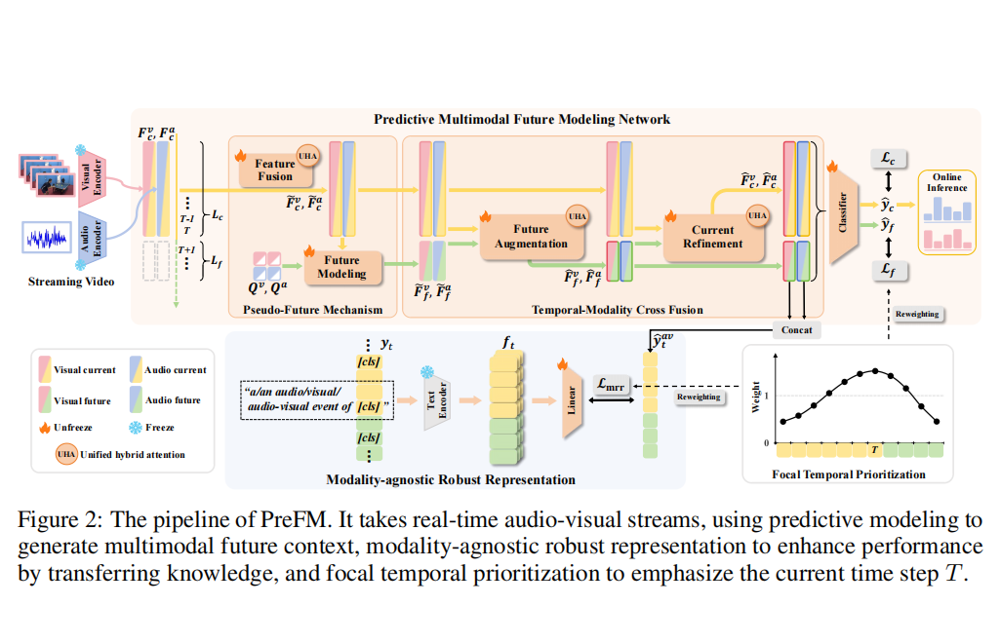
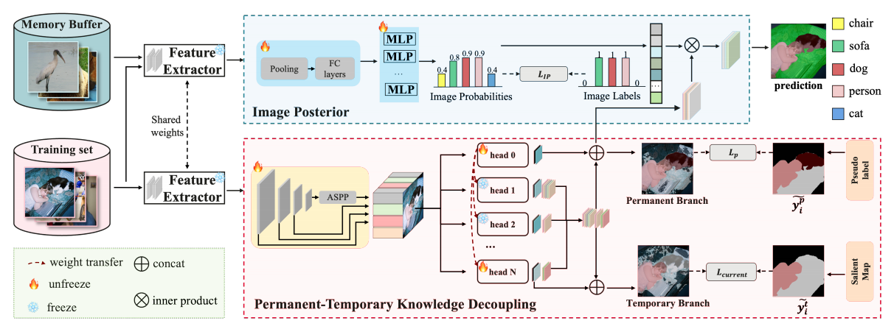

Xiao Yu
I am currently a Ph.D. Student at Beijing Jiaotong University (BJTU) in MePro, co-supervised by Prof. Xiaojie Jin and Prof. Yunchao Wei.
My research interests primarily lie in Computer Vision and Machine Learning, with a specific focus on:
- World Models
- Audio-Visual Video Understanding
- Continual Learning & Multimodal Learning
Education
-
M.S./Ph.D. Student, Beijing Jiaotong University
2024 - Present, Beijing, China -
B.E., Beijing Jiaotong University
2020 - 2024, Beijing, China
 Rednote
Rednote
Main Publications


Other Publications